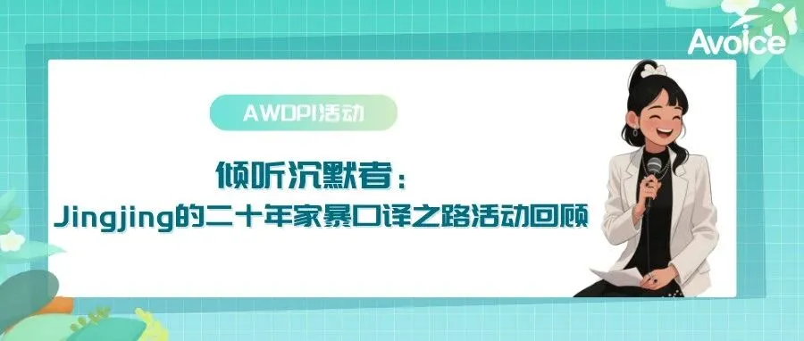
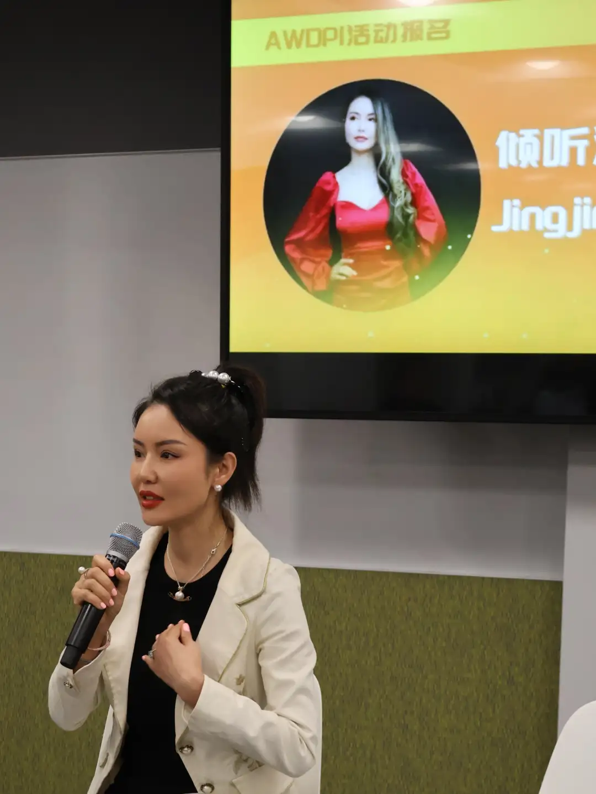
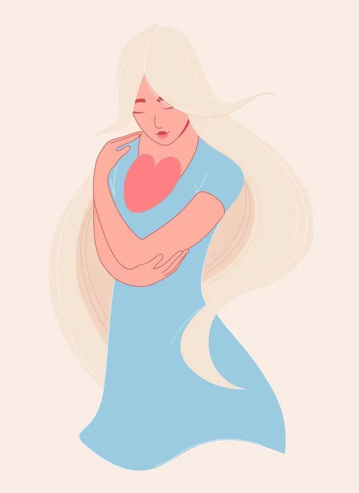
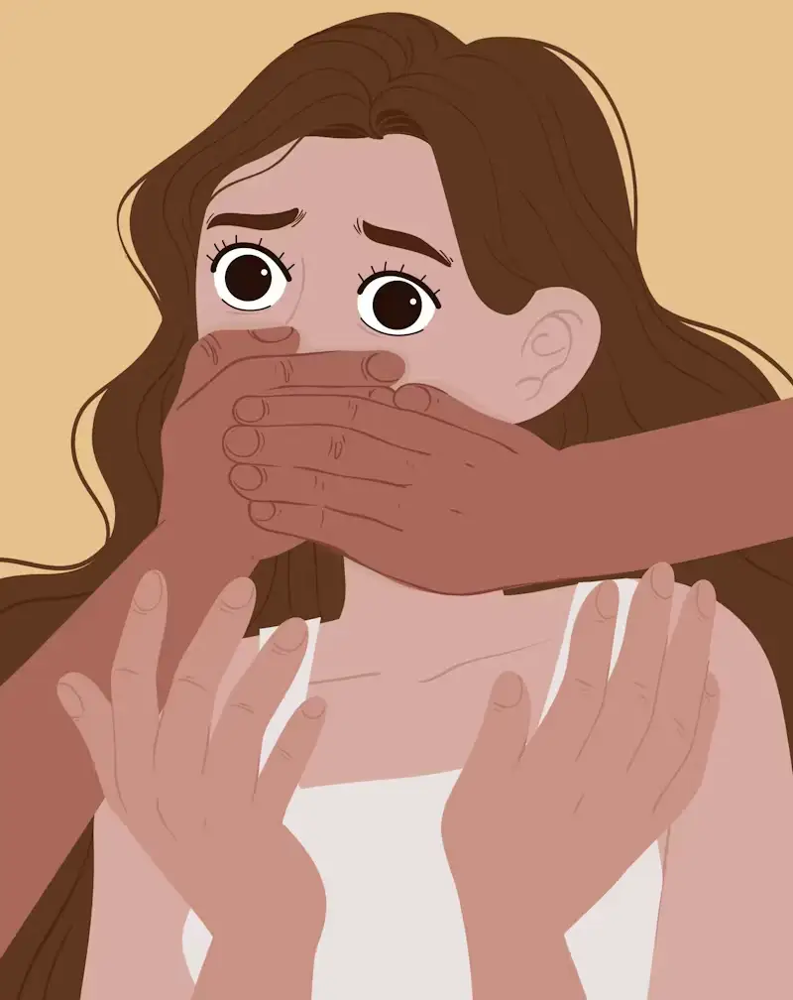
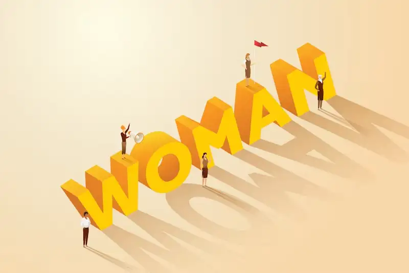
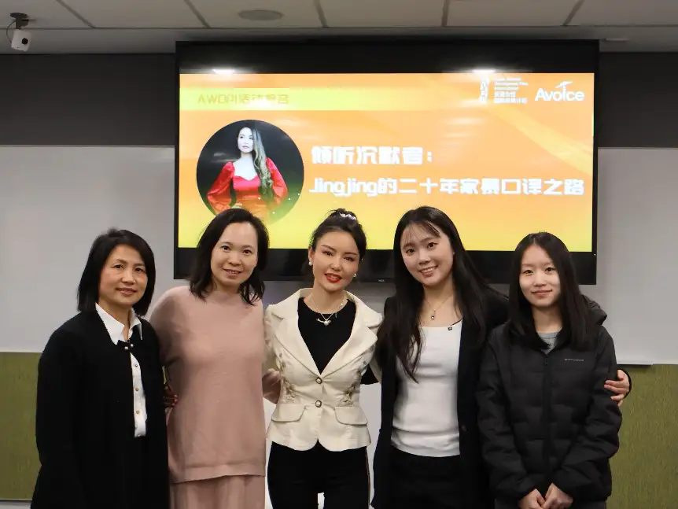

2025年6月3日，亚裔女性国际发展计划（AWDPI）澳大利亚国家办公室主办的 “倾听沉默者：Jingjing的二十年家暴口译之路” 主题座谈会在墨尔本成功举行。座谈会由AWDPI澳大利亚发起人兼负责人桂嘉泽Cindy主持，特邀拥有21年反家暴领域口译经验、服务各级社区组织及司法系统的杰出口译工作者、Liberty Victoria Voltaire Awards唯一华人获奖者Jingjing Lipski进行深度对话。活动吸引了60余位线上线下观众，共同聚焦亚裔女性口译工作者作为关键桥梁的角色，探讨家暴受害者寻求帮助与自救的路径。

口译员这一角色，远不止于语言的转换：是暴力现场的见证者、文化隔阂的沟通者、法律法规的诠释者。座谈深入探讨了Jingjing 走上口译之路的契机、在“中立”与“同理”间的专业平衡、对“家暴”定义与内涵的深刻理解，以及亚裔女性在澳大利亚社会中面临的 ‘隐形化’挑战。她的工作，不仅关乎受害者获得安全与疗愈，更勾勒出亚裔女性力量与专业发展的未来方向。
|口译之路的挑战、价值与内在支撑|
Jingjing 长达二十一年的家暴领域口译生涯，始于对人生意义的追寻与自身天赋的觉醒。尽管面临数字障碍（Dyscalculia）的挑战，她却在语言领域展现出非凡天赋。即便生活稳定，内心仍感到“唯独缺乏一种点燃自己的热情”。 这份寻求改变的渴望，在邂逅传译翻译(Interpreting & Translation）课程时得到强烈回应——“热情瞬间被点燃”。这一刻，她清晰地找到了人生的意义：践行“愿意成为帮助他人沟通的桥梁”的使命感。这份将语言天赋与助人热忱紧密结合的使命感，成为她投身极具挑战性的家暴受害者服务领域的原动力，并坚守至今。
然而，家暴口译员的工作远非简单的语言转换。Jingjing表达了其核心价值与伴随的艰巨挑战：她们是处理创伤性内容、解析文化敏感概念、并在当事人情绪崩溃时维系沟通的关键桥梁。 这要求口译员在“忠实传达信息”的专业准则与“具有同理心”地传递“说话者的表情和语气”之间，进行精妙的平衡。Jingjing提到：“同理心是翻译必备的素质，但同时专业素养同样重要。无论当事人的观点如何，情绪如何激烈，都不能影响我们保持专业的态度。” 这份冷静的专业性在面对人性最黑暗的瞬间尤为重要——无论是为重大刑事案件（谋杀、强奸、贩毒）中的被告翻译，还是在医疗场合向母亲传达孩子离世的噩耗。口译员的作用“永远只是翻译作用”，必须克制个人情感，坚守边界。 当受害者沉默时，Jingjing的职责边界同样清晰：“我们不为ta说什么、愿意说多少、会如何影响案件的进展负责，我们只为ta说出口的话负责。” 如果对方不愿叙述，她唯一能做的，就是如实转达这份沉默。
长期浸染于高强度同理心需求与极端情绪环境中，对口译员的心理健康构成严峻考验。Jingjing提到在工作中“经常直面人性最黑暗的一面”，这种持续暴露极易引发“替代性创伤”。在分享如何构建心理韧性、守护内在稳定时，她阐述了应对之道。基于她的宝贵经验，我们总结出以下四点自我关怀的方法，希望为所有从事创伤支持、社会服务及相关领域的工作者提供切实可行的心理防护路径

■ 自我认知与教育是防护起点： “觉察自己在怎样的情况下会有怎样的情感反应，对自己的心理反应有足够认知，这就需要进行自我教育。” 主动学习创伤反应机制。
■ 日常习惯是韧性基石： 通过“阅读、运动、社交”等健康方式滋养身心，主动补充心理能量，建立日常抗压缓冲带并积极维护心理弹性。
■外部支持是专业保障： 必要时，“和专业人士交流来完成自我审视的过程”，进行有效心理疏导，切勿独自承受重负。
■ 角色清晰是力量之源： “任何事情发生，你都要有一个减压的过程来自我保护。” 核心在于明晰角色定位： “要明白我们的使命不是拯救谁，而是搭建沟通的桥梁，只有内核稳定，才能在这条路上走得更远。”
这份对使命的清醒认知和对自我保护的重视，构成了她在这条艰难道路上持续前行的内在支撑。
|澳大利亚家暴定义与多维暴力形态|
在座谈中，Jingjing Lipski 为观众分享了澳大利亚家暴定义的宽泛性与文化颠覆性。根据澳大利亚《家庭暴力保护法》，家暴不仅限于肢体冲突，更涵盖 “任何具有暴力性、威胁性、控制性的行为或意图使人感到恐惧、不安全的行为”，这一定义具体体现为五大维度：

■ 身体暴力（如殴打、推搡）
■ 心理/情感虐待（精神操控、贬低侮辱）
■ 语言暴力（当众羞辱、威胁恐吓）
■ 经济控制（限制工作、剥夺财务自主）
■ 性暴力（婚内强奸、强迫性行为）
Jingjing提到：许多亚裔女性将‘丈夫当众数落妻子点大杯咖啡’、‘以文化传统之名禁止见朋友’视为常态，甚至很多受害者表示‘习惯了’——而这些恰恰是澳洲法律明确定义并禁止的家暴行为！文化枷锁常使受害者陷入 “没有他我怎么办”的主体性困境，而年轻一代的觉醒正推动打破沉默。 当我们将暴力从家务事的标签中剥离，每一次发声都在为改写受害者的命运注入力量。
Jingjing 还分享了四个直击人心的真实案例，为我们揭示了家暴的复杂面貌：

行动汇聚力量，共筑无暴力社会
Jingjing Lipski 二十一年的宝贵经验，映射出澳大利亚反家暴工作的多维挑战：从法律对家暴的宽泛界定（涵盖身体、心理、经济、性等多维度暴力），到亚裔社区面临的文化困境（如“隐忍”压力、“隐性化”处境），再到司法、医疗、社区服务的联动需求。
家暴的残酷性在于其普遍性与隐蔽性——它存在于移民家庭、高知群体、青年伴侣等不同社会层面，而语言隔阂与文化差异，常使受害者陷入孤立无援的困境。抗争的力量源于持续行动。 无数像Jingjing这样扎根一线的口译员、社工、法律工作者与社区组织，以专业性与坚持的力量，为无声者传递诉求，搭建求生通道；她们的工作，是松动压迫链条的关键一环。
这力量，需要你我共同接力：
01
｜联结社区支持
扫码添加 Avoice女性保护小助手 (微信号: Avoice-WomenAid )，接入 AWDPI 跨部门支持网络（语言/心理/法律/庇护/安全发声），或加入海外华人女性互助社群。
02
｜ 传播必要热线
让更多人知晓 000（紧急报警） 与 131450（中文传译） —— 语言，不应成为求助的壁垒。
03
｜拒绝沉默旁观
当目睹公开羞辱、死亡威胁等暴力形式时，在确保安全前提下报警或联系专业机构 —— 沉默，是对暴力的默许。

未来
期待更多亚裔女性加入发声的行列
无论是在家庭中勇敢捍卫界限
在社区坚定支持受害者
还是在公共空间倡导变革
每一份勇气
都在编织更紧密的安全之网
共同缔造免于暴力、享有尊严的生存环境
——2025 AWDPI澳大利亚国家办公室
撰文 | Rong Li
审核 | Jiaze Gui
排版/封面｜张景阳
图片来源｜unsplash